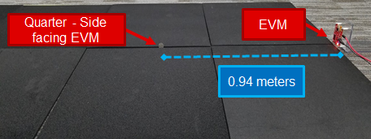
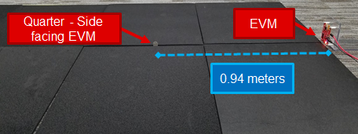
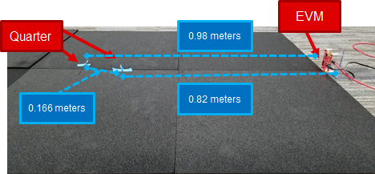
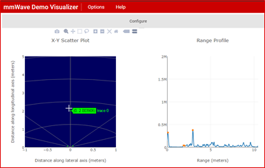
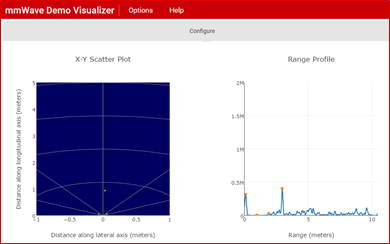
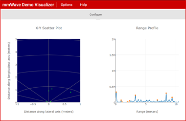
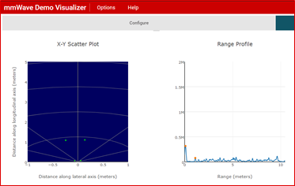

Introduction
The objective here was to experiment with mmWave's ability to sense the position of very small objects. For the purpose of this exercise, we used standard American quarters and ran the following experiments.
- Detecting a single quarter in front of the mmWave Sensonr EVM. The quarter was kept in different orientations in front of the EVM and the goal was to check if it can be detected in that orientation and to what maximum distance from the sensor antenna.
- Finding out the minimum separation needed between two quarters to detect them as two distinct objects. This was performed for both range and angular separation as detailed in the results below.
Setup
The setup for this experiment can be divided into two parts namely, Physical setup and Software setup. These are detailed below:
Physical Setup
The Physical setup includes information about the scene such as the distance between the object and the sensor antenna, the type of object used, hardware setup and any other physical considerations e.g. non-reflective surfaces or use of anechoic chamber etc. The physical setup used for this experiment is given below:
- The experiment was performed on a carpeted ground to reduce unwanted detections i.e. clutter.
- For the first part which relates to detecting a single quarter in front of the mmWave Sensor:
- A single quarter was mounted to the ground with masking tape. For reference, the diameter of a quarter is 24.26 mm.
- The quarter was moved further away from the sensor in small increments until it was no longer detectable.
- This was repeated for different orientations of the quarter: Face-facing and Side-facing and Face-down.
 

- A similar procedure was used for the second part i.e.finding out the minimum separation needed between two quarters to detect them as a two distinct objects.
- Two quarters were mounted to the ground with masking tape. For reference, the diameter of a quarter is 24.26 mm.
- One quarter was moved further away in small increments until it was detected as a separate object i.e. both quarters could be separately detected.
- This part was repeated for both range separation (range resolution) and azimuth angular separation as shown below.

- The hardware setup included an IWR1443 EVM connected to a Windows Host PC.
Software setup
- The IWR1443 EVM was running the mmWave SDK Out-of-Box example.
- The Windows host PC was running the mmWave Demo Visualizer to show the range and scatter plots. The mmWave Demo Visualizer was configured for Best Range Resolution as shown in the settings below.
Method
The steps presented below were repeated for both scenarios listed above.
- Create the physical setup as per the details provided above.
- Flash the mmWave SDK Out-of-Box Demo on the mmWave EVM and connect the EVM to the host PC.
- Launch mmWave Demo Visualizer on the host PC and setup the Visualizer as per the configuration shown below:
- Platform - xWR14xx
- Desired Configuration - Best Range Resolution
- All other settings - Default values

- Press Send config to MMWave Device
- Select the Plots Tab to look at the Scatter Plot and the Range Profile plot
- Move the coin(s) as according to the desired experiment.
Results
The steps presented above were repeated for the test scenarios described above. The Scatter plots and Range profile plots were used to determine
- The max distance at which a single quarter could be detected in the given orientation and
The minimum separation (both range and angular) needed between two quarters for the sensor to detect them as two separate objects.
| Single quarter detection | |||
|---|---|---|---|
| Orientation | Result | Max Distance | Visualizer Plot |
| Quarter's Face facing the EVM | Detected | ~2 meters |  |
| Quarter's Side facing the EVM | Detected | ~0.94 meters |  |
| Determine minimum seperation for distinct detection | ||
|---|---|---|
| Direction | Min Seperation (meters or degrees) | Visualizer Plot |
| Range | 0.166 meters |  |
| Angular | 19.64 degrees |  |
Conclusion
- The xWR14xx EVM could detect a single quarter at a maximum distance of about 2 meters with the quarter's face perpendicular of the EVM.
- The maximum distance reduces to almost half when the quarter is kept side facing. The quarter could not be detected with it's face down.
- The xWR14xx EVM could seperate two quarters in both range and angular directions.
- The minimum range seperation with the Out of Box demo configuration was found to be 0.166 meters and the minimum angular seperation was found to be about 20 degrees.